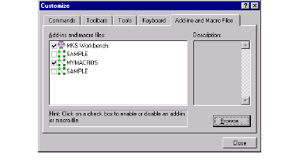

To integrate with Microsoft Visual Studio
1 Launch Microsoft Visual Studio.
2 Select Tools > Customize.
3 Click the Addins and Macro Files tab.
4 Browse through the directories for the VSAddIn.dll.
This file is located in the /lib subdirectory of the directory where you installed DIScover.
5 To enable the .dll, select DIScover.

6 Click Close.
Microsoft Visual Studio returns to the main application window. A DIScover macro toolbar appears as a floating toolbar that you can dock or leave floating.
Note: You must repeat this procedure every time you install a new version of DIScover in order to update to the correct version of .dll and maximize integrated functionality.